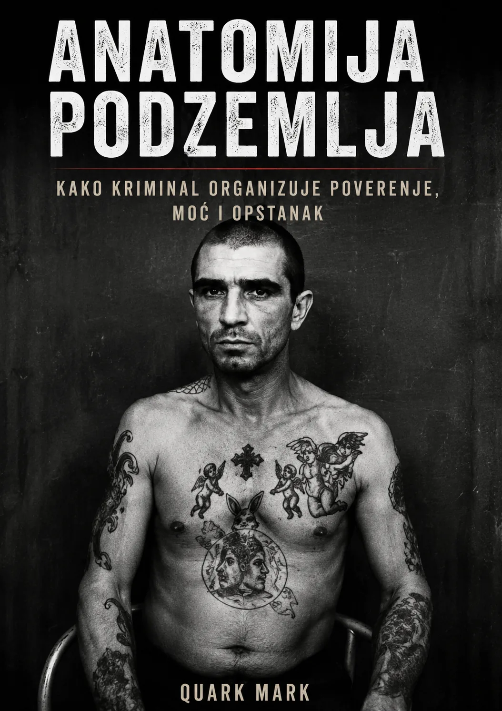

Anatomija podzemlja · knjiga u pripremi
Kako se ulazilo u Jakuze?
Kako kriminal organizuje poverenje, moć i opstanak.

Čovek se obično nije samo pojavio na vratima i rekao: „Dobar dan, želeo bih da postanem kriminalac.“
Veza sa postojećim članom bila je važna. Mladi kandidat je mogao neko vreme da bude u podređenoj ili pripravničkoj ulozi, ponekad živeći i radeći uz starijeg člana — tradicionalno se pominje praksa heyazumi, svojevrsnog učenja života organizacije.
Formalni prelazak u pun odnos sa šefom bio je povezan sa ritualom:
Sakazuki
Šef i novi član ritualno dele sake.
Poenta nije alkohol. Poenta je stvaranje odnosa oyabun–kobun.
Od tog trenutka simbolički nisi samo zaposlen kod čoveka. Postaješ njegov sin unutar kriminalne porodice.
I odmah vidiš ogromnu razliku:
CJNG — naredba i disciplina.
Trijada — bratstvo i patronat.
Yakuza — očinstvo i poslušnost.
Tri različite socijalne tehnologije za isti problem: kako naterati ljude da ostanu lojalni kriminalnoj organizaciji.
Quark Mark